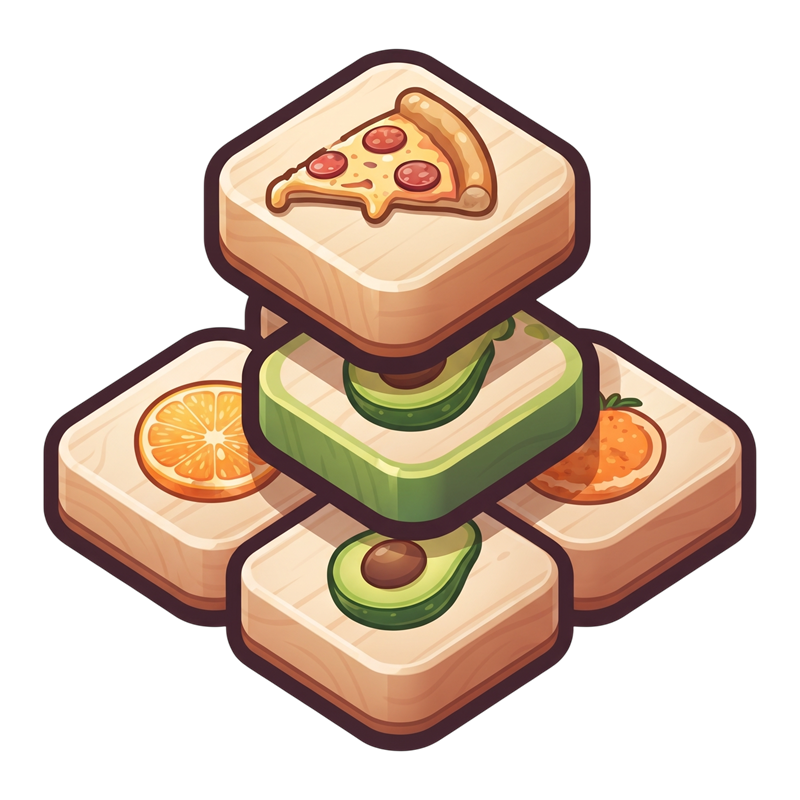

Atıştırma Yığını
3'le, sepetleri fulle!
Canlar yenilenir: 00:00:00
İlk 7 gün boyunca her gün giriş yap, ödülünü topla!
En yüksek seviyeye ulaşan 10 oyuncu
Snack Coin'ler yalnızca gerçek para ile satın alınabilir.
Reklam oynatılıyor…
Yenilenir: 00:00:00
Aynı gördüğün 3 kartı üçle!
Tahtayı temizledin.